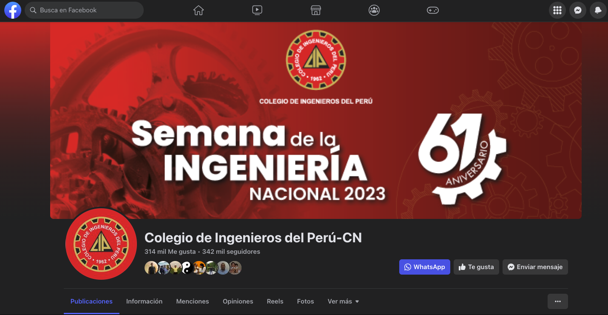

Objetivos
-
Promover la importancia de la interoperabilidad en el ámbito de la salud.
-
Compartir experiencias y buenas prácticas en la implementación de estándares de interoperabilidad.
-
Analizar los desafíos y oportunidades de la interoperabilidad en el contexto de diferentes países.
-
Establecer un espacio de networking y colaboración entre representantes del sector público y privado.
Justificación
La interoperabilidad en el sector de la salud es fundamental para mejorar la calidad de la atención, la eficiencia en la gestión de datos y la toma de decisiones informadas.
Este simposio internacional tiene como objetivo reunir a expertos y profesionales de diferentes países para intercambiar conocimientos y experiencias, fomentando la adopción de estándares de interoperabilidad y promoviendo la colaboración entre el sector público y privado. A través de las presentaciones magistrales, paneles de discusión y sesiones de preguntas, los participantes podrán obtener una visión amplia de los avances, desafíos y oportunidades en el campo de la interoperabilidad en salud.
Presentación del evento
En colaboración con HL7 Perú y el prestigioso Colegio de Ingenieros del Perú - CD Lima, estarán organizando un evento de gran relevancia dedicado a la #interoperabilidad en salud. 💪🔗
Imaginen la emoción de participar en un encuentro donde se reunirán expertos nacionales e internacionales, todos ellos comprometidos con el impulso del estándar #HL7. 🌟🤝
Este evento brindará una oportunidad excepcional para compartir ideas, aprender de los líderes del sector y establecer conexiones estratégicas en el ámbito de la salud digital. 🤝🚀
Ponentes
Hernán Porras Gamarra
Healthcare IT Consultant
egresado de la universidad Nacional Federico Villarreal con más de 10 años de experiencia en el sector público y privado, de los cuales 4 años trabajó en el sector salud en España, principalmente en el sector público, Actualmente se desempeña como Consultor Senior TI para Salud y Arquitecto de Soluciones. Cuenta con la certificación internacional HL7 v2.
Diego Kaminker
Deputy Chief Standards Implementation Officer de HL7 Internacional
Es Fellow de HL7 y de IMIA. Miembro del directorio de HL7 Argentina y del education advisory council de HL7 Internacional. Fue director de afiliados por muchos años y ha definido, implementado y mantenido cientos de proyectos de interoperabilidad en salud utilizando los principales estándares de HL7 (V2.x, CDA R2 y FHIR). Ha creado y supervisa los Cursos Fundamentales e intermedios de HL7 y FHIR, con más de 7,000 estudiantes capacitados en estándares de HL7 en todo el mundo en los últimos 15 años y ha participado activamente en las definiciones para la Red Nacional de Salud Digital de Argentina basada en FHIR y muchas guías de implementación de alcance regional y nacional en Latinoamérica.
Panelistas Nacionales
Rossana Rivas Tarazona
Co Chair & Founder Health Level Seven-HL7 Peru
MSc en Univ. Jean Moulin-Lyon III de Francia, con estudios doctorales completos en Ecole des Mines de Paris, Francia, estudios de Salud Pública en Univ. Catholique de Louvain, Bélgica, y estudios completos de Maestría en Administración en Univ. del Pacífico, con estudios de Maestría en Ciencias Políticas en Pontificia Univ. Católica del Perú. Miembro de la Comisión de Gestión de Tecnologías para la Salud del CIP, CDL Lima, Co Chair y Founder de Health Level Seven-HL7 Perú, Es Miembro del Consejo de la División de Ing. Clínica y es Miembro del Consejo de la División de Evaluación de Tecnología en Salud de IFMBE, Miembro de la Red de Evaluación de Tecnología-RedETSA de Pan American Health Organization; Miembro del Grupo de Discusión Latinoamericano de Ing. Clínica-GDIC; Prof., Investigador y Consultor Internacional en Ing. Biomédica, Ing. Clínica y Evaluación de Tecnología en Salud.
Ulises Contreras
Gerente de la Gerencia de Sistemas e Información Tecnológica de ESSALUD
Ingeniero Informático de la Pontificia Universidad Católica del Perú, con mas de 20 años de experiencia en el sector público y privado, de los cuales 8 años en el sector salud, Actualmente se desempeña como Gerente de Sistemas e Innovación Tecnológica de la Gerencia Central de Tecnologias de la Información y Comunicaciones de EsSalud. Cuenta con un Diplomado en Informática Biomédica de la Universidad Peruana Cayetano Heredia y concluyendo la Maestria de Ingenieria Biomédica en la Pontificia Universidad Católica del Perú.
Miguel Gutiérrez
Director General de la Oficina de Tecnologías de la Información
Ministerio de Salud de Perú
Ingeniero de Sistemas, Especialista en Tecnologías de información de la Universidad ESAN, Magister en Gerencia de Proyectos Empresariales de la Universidad Federico Villareal; Coordinador de la Unidad de Tecnologías de la información y Estadística del Hospital de Emergencias Villa el Salvador Desde el 2016 hasta el 2019; Coordinador del Componente 3 en PCRIS “Mejoramiento y Ampliación del Sistema Único de Información en Salud” y Especialista en Tecnologías de la Información del Comando COVID del Ministerio de Salud. En el 2020 director general de la Oficina General de Tecnología de la Información del Ministerio de Salud, 2021 al 2022 jefe de la Unidad de Tecnologías de la Información del Hospital de Emergencias Villa El Salvador, actualmente llevando la Maestría Gestión Pública en la Universidad San Ignacio de Loyola y ocupando el Cargo de Director General de la Oficina General de Tecnologías de la información del Ministerio de Salud.
Panelistas Internacionales
Styp Canto Rondón
Chair HL7 Perú
Presidente y miembro fundado del Directorio HL7 Peru, Ingeniero de Telecomunicaciones con más de 12 años de experiencia, 8 de ellos en el campo de la salud digital. Impulsor de Transformación Digital, eHealth, Interoperabilidad, Inteligencia Artificial, Telemedicina. Miembro vocal de la Organización Internacional de Telemedicina y Telesalud, Miembro de la Comisión de Gestión de Tecnologías para la Salud del Colegio de Ingenieros de Perú. Miembro investigador de Calidad de Servicios de Telesalud en América Latina en la Universidad Federal Minas Gerais de Brasil
Mario Enrique Cortés
Chair HL7 Colombia
Consultor senior internacional en interoperabilidad en salud y uso de estándares HL7. Ingeniero Industrial y emprendedor con más de veinte años de experiencia en la industria informática en salud. Premio Joachim Dudeck, concedido durante la Conferencia Internacional de Interoperabilidad HL7 (IHIC) 2011.
Guilherme Zwicker Rocha
Chair HL7 Brasil
Presidente de HL7 Brasil y CMIO (Chief Medical Informatics Officer) de la empresa brasileña de tecnología CTC, médico, trabaja con informática en salud y la incorporación de nuevas tecnologías. Adelante como Presidente y Director Ejecutivo de la Afiliada HL7 Brasil desde 2018. Como médico especialista en salud digital, trabaja con sintaxis digital (HL7 FHIR) y terminologías controladas para el área de la salud (CID, LOINC, SNOMED), con enfoque de adopción nacional.
Programa del Evento
| Hora | Concepto |
|---|---|
| 07:00 pm | Apertura y preámbulo del Simposio Internacional Ing. CIP Jorge Cueva Nolberto Director Secretario del Consejo Departamental de Lima CIP |
| 07:05 pm | Palabras de bienvenida Ing. CIP Styp Canto Miembro Comisión de Gestión de Tecnología para la Salud del CD Lima CIP y Chair HL7 Perú |
| 07:10 pm | Presentación del primer expositor, a cargo del moderador del evento, Ing. CIP Henry García |
| 07:15 pm | Primera Exposición: Ing. Hernán Porras Gamarra Business & Integration Architecture Team Lead at Accenture España. Tema: La implementación y desafíos de HL7 FHIR en el sector sanitario en España |
| 07:40 pm | Presentación del primer panel, a cargo del moderador del evento, Ing. CIP Henry García |
| 07:45 pm | Primer Panel de Análisis: Desafíos y oportunidades de la interoperabilidad en el Perú Participantes: 1. Mg. Rossana Rivas, Miembro Comisión de Gestión de Tecnología para la Salud del CD Lima CIP y Co Chair HL7 Perú 2. Ing. Ulises Contreras, Gerente de la Gerencia de Sistemas e Información Tecnológica, Es Salud 3. Ing. Miguel Gutiérrez, Miembro Comisión de Gestión de Tecnología para la Salud del CD Lima CIP |
| 08:05 pm | Preguntas a los panelistas, a cargo del moderador, Ing. CIP Henry García |
| 08:15 pm | Presentación del segundo expositor, a cargo del moderador del evento, Ing. CIP Henry García |
| 08:20 pm | Segunda Exposición: Diego Kaminker Co-Chair de HL7 International Council Tema: Panorama Regional de Estándares de Informática en Salud |
| 8:45 pm | Presentación del segundo panel, a cargo del moderador del evento, Ing. CIP Henry García |
| 8:50 pm | Segundo Panel de Análisis: Avances y desafíos en la interoperabilidad de los sistemas de salud de Latinoamérica: Experiencias y lecciones aprendidas Participantes: 1. Ing. CIP Styp Canto, Miembro Comisión de Gestión de Tecnología para la Salud del CD Lima CIP y Chair HL7 Perú 2. Ing. Mario Mario Enrique Cortés, Chair HL7 Colombia 3. Ing. Guillerme Zwicker, Chair HL7 Brasil |
| 9:10 pm | Preguntas a los panelistas, a cargo del moderador, Ing. CIP Henry García |
| 9:20 pm | Conclusiones y Palabras de Cierre del Evento Ing. CIP René Mitma Ramírez Presidente de la Comisión de Gestión de Tecnología para la Salud del CD Lima CIP |
| 9:30 pm | Coffee Break |
Transmisión Online a través de la página web del CIP
Habrá una transmisión online en vivo para el evento.